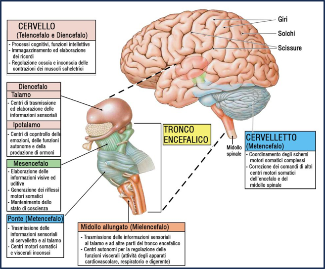

Il sistema nervoso centrale regola le interazioni con l’ambiente circostante.
Esso è costituito dall’encefalo (formato dal cervello, cervelletto e midollo allungato) e dal midollo spinale contenuto nella colonna vertebrale.
Ora vediamoli piu’ nel dettaglio...

